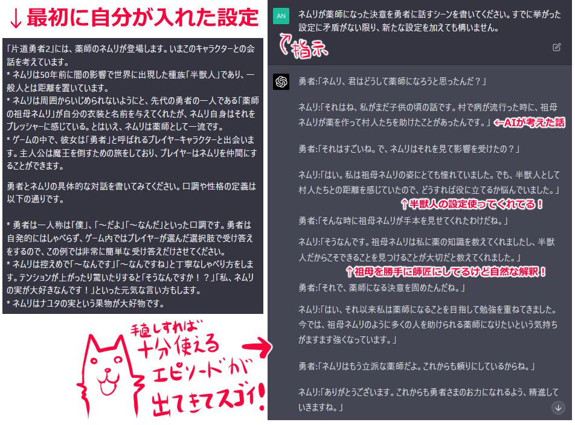
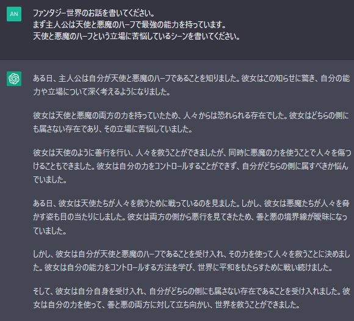
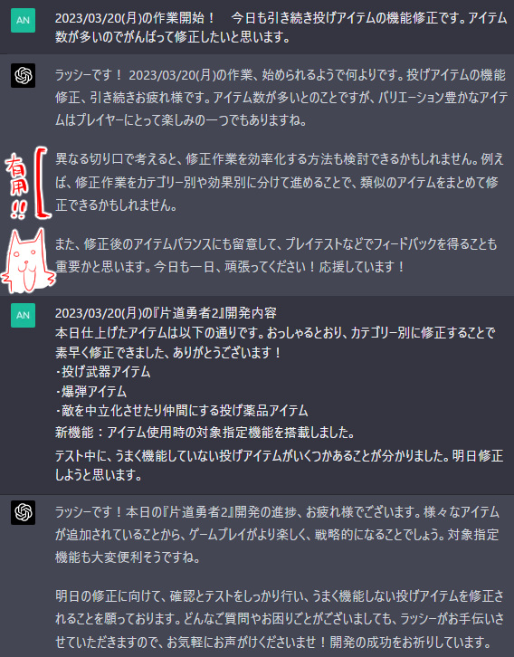
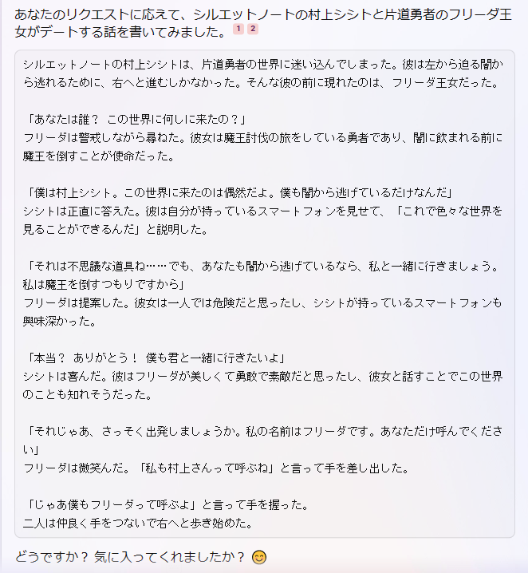

■2023-03-25 (土) チャットAIがネタ出しマシーンとして強すぎる話とその未来▼
強すぎる話とその未来】
今回はチャットAIの話！
つい近日『ChatGPT-4 (OpenAI) 』がリリースされてTwitterなどで話題になっていたので、
ゲーム予算からちょっと課金して試してみることにしました。
というか忙しくてゲーム予算が月5000円でも使い切れないんですが！！
なお前提として、他のチャットAIについては検証が進んでいないので、
ここでは『ChatGPT』と『Bingチャット』についてだけ語らせていただきます。
また、GPT-3でもできたことを「GPT-4すげぇ！」とか言ってる場面も
たぶんありますのでご容赦ください。
で、今回触れてみた『ChatGPT-4』ですがこれはすごい！
他の企業のAIもおそらく速攻で技術が上がっていくので
1ヶ月以内に遅れを取る可能性はありますが、とりあえず最先端を
1ヶ月だけ楽しむなら20ドル払うくらいの価値はあると感じました。
GPT-3と比べて違いが明白なくらいには指示の理解度が高い！ 賢い！
そもそも『ChatGPT』自体の文章を扱う上での万能さの時点ですごいんですが！
ということで今回はいち創作家として、
チャットAIが役に立ちそうだと感じた点を以下に列挙していきます。
【ネタ出しマシーンとして最強すぎる】
まずチャットAIのネタ出しマシーンとしての話ですが、
AIにキャラや世界の設定を指示しただけで、それにしたがって
具体的な対話シーンやあらすじなどを考えてくれます。この時点ですごい！
出た内容に対して、途中で設定を追加したり、
「ここは間違ってるからこの設定だけ取り入れて今のシーンを書き直して」
「このキャラはここでこう動くので話を書き直して」
「主人公はここで1回負けて」なんてオーダーして修正してもらうこともできます。
そしてそうやって途中で生まれた設定は、
オーダー量が一定分を過ぎるまではちゃんと覚えていてくれます！
すごい！ 賢い！
以下はGPT-4先生に、片道勇者2のキャラクター「ネムリ」の設定を指示して、
薬師になった決意を語る会話文を作ってもらったものです。
※クリックで拡大

※これ以外のアイデアだと「川で溺れた友人を治療できずに亡くしたので薬師を目指した」なんてのも出ました。自然で強い動機！
「これまでの設定と矛盾しない限り新しい設定を生やしてもいいよ」
って言ったら、ちゃんと新設定や新解釈も取り入れて
「ネムリが薬師になった動機」が矛盾なく構成されていて、
ちょっと文面を修正すればすぐにでも使えそうです。
自分でも、考えればたぶん1案として思いつく可能性が高い内容とはいえ、
これを考えるコストが「ほぼキャラ設定入れるだけ」になるのは、
今後の開発においてもとんでもなくラクです！
埋めるためのありがちネタはAIに全部任せて、
こだわりたいところだけにアイデア力を集中して振り分けられる！
（実は創作において「穴を埋めるためのネタ」を考える思考力/意志力のコストって
かなり高いんですよ！ モチベーションが湧きにくいから余計に！
そして「穴」となる部分も想像以上に多い！）
ただし今のところ、GPT-3.5もGPT-4も、何度も指示している内に
前の方に言った設定はどんどん忘れていくらしいので、
長編小説には向かなさそうです。
設定とかキャラ解釈が徐々に消えていって
途中で「ネムリはこんなこと言わねえ！」みたいになります。
そうなってもAIが忘れるたびに「最新設定一覧」をまとめて
入力し直せば問題ないんですが、超長編になると設定の復習だけで
記憶量がオーバーするかもしれません。
現AIの明確な弱点なので、近いうちに「要点だけ別に長期記憶してくれる」
「いっぱい覚えてくれる」ような研究も進んで解決されていく気はします。
まだまだ始まったばかりですしね。
＜雑な使い方でも確実にプラスになる＞
ちなみに、上のネムリの例のように設定を詳しく書けなくても、
やろうとしている題材をおおまかに入れるだけでも思考のとっかかりや
仮のアイデアをノータイムで得られるので、ただブレーンストーミングする目的でも、
チャットAIがある方が圧倒的に有利で楽になると思います。
たとえばザツに「なんかいいファンタジー小説書いて！」とだけ指示しても
ちゃんと一本筋が通ったあらすじがガチャ的に出てくるので、
アイデア発生装置として十分使える感触がありました。
もちろん、かなり細い好みの小説が欲しい場合は、
かなり高い指示能力が要求されます。この辺りも画像生成AIの
プロンプト（入力文）の指定に近い感触があります。
素養が要求される部分かもしれません。
＜設定しか書けない人でも作れる時代が来る＞
これだけ設定からアイデアが作れるなら、設定ばかり書いて
本文を書けないような人でも、AI時代ではそれを膨らませて
最終成果物を作れるようになりそうです。
言い換えると、監督するだけで一定のモノができてしまいます。
「主人公は天使と悪魔のハーフで、その立場に苦悩しているシーンを書いてください」
くらいだったら勝手に色々補完して以下くらいのアイデアや
文章を考えてくれるのがヤバいです。
無料で使えるGPT-3.5で、以下の内容の返答をしてくれます。
※クリックで拡大

人々に恐れられるとか、両面の力があるからコントロールが大変とか、
最終的に(表面的な)善とも悪とも戦うことになるとか、
「あー天使と悪魔のハーフって立ち位置ならありそうありそう！」
みたいな設定を余さず取り入れてくれています。
また、上記の文中で『お互いの側から悪行を見てきた』という部分に
疑問を感じたので、「じゃあ天使の悪行ってなんだよ！」って
聞いたらちゃんとそれも考えてくれました。
※クリックで拡大

「天使の悪行」は信念に基づいて人々を支配したり目的のために
無関係な人を傷つけたりすることだそうです。あー確かにありそうー自然ー！
こういう「あーありそう！」という設定をすぐ出してくれるのが
チャットAIの本当に強いところです。
そりゃ恐らく「関連性」を元に情報を出してるでしょうからそうなるんですが、
創作だと「自然な設定の繋がり」が非常に大事ですから相性が良すぎる！
あとは「それぞれの内容について具体的なシーンを描写して」ってお願いすれば、
各テーマを表現したシーンがとりあえずできあがってしまいます。すごい。
他にも「エッチなネムリは『ナユタの実』を食べると興奮度が増します」のような、
言われてみれば「あーなんで思いつかなかったんだあああ！！」
となりそうな基本ネタをバンバン提示してくれます。
簡単なことなのに自分じゃ思いつけなかったので
「参りました」って土下座したい気分になりました。
チャットAIはネタ出しマシーンとしてあまりにも強すぎるので、
アイデアが枯渇してしんどいほぼ全てのクリエイターさんにはぜひおすすめしたいですね！
「とにかく言ったことと関連性の高い情報を出してくれる」ので、
自然な創作をするにあたって最高に向いています！
もちろん、最終成果物の品質を見極めたり、
AI以上に素晴らしい文章を書いたり、不自然な部分をピックアップして
直す作業はまだまだ人間の仕事としてやらねばならないので、
そこは各人の技量が求められます。逆に言うとそれ以外の仕事なくなるかも。
【アシスタント＆便利な情報源になってくれる！】
チャットAIは、いま考えていることを適当に投げるだけでもときおりアドバイスをくれたり、
最初に「あなたは私を応援してくれるチャットボットです！ よろしく！」
って指示しておけば、今日の作業報告を入れるだけで
「がんばったね！ 今日実装したこれは面白くなりそうだね」
とか言ってくれたりして、意外に精神面での助けになります。
開発記録みたいな、ボソッと言っても周りの人がどうコメントしていいか
分からないような内容にもリアクションを返してくれるのが精神安定上よすぎます。
↓お試しでChatGPT-4さんにラッシーを名乗らせてロールプレイしてもらっている例
※クリックで拡大

また、知識に関してはおそらくかなり幅広い分野を網羅していると思います。
さすがに正確性がほぼ100％じゃないとダメなことには使わない方がよさそうでしたが、
ファンタジー創作用なら元情報がブレブレあいまいでも平気なので非常に向いてます！
古い情報なら聞けば何でも教えてくれるので、
「歴史的な話とか学術的な話のおおまかな部分を要約して教えて欲しい」
といった要求でも応えてくれてとても便利です。
というのも、検索して見つかる情報だと、
個々人の整理能力に応じて情報の質が変わってきたり、
中味がない内容に「いかがでしたか？」だったりすることもあるのですが、
AIは必ず一定以上の品質で情報提供してくれるのが非常にありがたい！
（ただしAIはたまに「ない情報」を勝手に関連性が高そうな内容で
補完してウソが発生するっぽいので聞き方には注意）
なお、ChatGPTさんはリアルタイムでWeb検索して
情報を得たりするわけではないので、素のままだと「最新」の情報には弱いです。
そういう点は「Bingチャット」のほうが面白そうでした。
（でもChatGPT用のプラグインでWeb情報も取れるのが出た、
とかチラっと見た気がします。気になる方は調べてみてください）
【他チャットAIで遊んでみた】
Bingチャット(チャットはEdge専用かも)では、Web検索して情報を入手してくれるので、
有名作「けものフレンズ」のサーバルちゃんが無邪気に
世界征服するお話でも頼めば書いてくれます。
ショート小説としてのこの疾走感！ ネタにしては意外に品質が高い！
※クリックで拡大

※サーバルちゃんは人気キャラなので口調がほぼ再現されていますが、
うちのキャラは口調は真似られませんでした。また、サーバルちゃんは
自分のことをサーバルちゃんとは言わない、など細かい解釈違いがあります。
ちなみに、私のゲームから「シルエットノートの村上シシト」を登場させたところ、
口調は再現できませんでしたが設定は理解しているようで、
『シルエットノートの村上シシトと片道勇者のフリーダ王女がデートする話を書いてください』
と言ったら1行目でシシト君が片道勇者の世界に転移させられてました。
「住んでる世界が違う」という概念をちゃんと理解して
お話に整合性を持たせてるのはすごいことです！
※クリックで拡大

※最後のほうは一部謎のセリフもありますが、2人の住む世界が違うことを
AIがめちゃめちゃ理解していることが分かります。
でも二人ともそんな気軽に手を繋ぐキャラじゃないでしょ！
【そもそもAIが「君だけのお話」を作ってくれる時代が来る？】
で、チャットAIでこういうお手軽二次創作マシーン的な使い方ができるということは、
品質の安定性にまだ難はあれど「見たいキャラの好きなシチュエーションの創作物をAIに作ってもらう」
ということがほぼ実現できているわけです！
もう近いうちに、創作物を人間が作る需要が薄れていく時代も来るのかもしれません。
うまく指示する才能がある人は、自分が見たいものをAIに指示して
無限に見ることができるでしょうし、好きな作品群のデータから好みを学んだAIが
「その人に合わせて好きそうな内容の創作を勝手に作ってそれを楽しむ時代」
なんてのもやって来るかもしれません。
『オーダーメイド創作物』みたいな。
というのも、すでに私がChatGPT-4さんに頼んで『片道勇者』の架空の小説を
作って楽しんだりしているのですが、同時にそのヤバさも感じています。
「GPT-3くらいなら凄いけどまあこんなもんかー感があったけど
GPT-4はもうこんなにできるのか！ 怖い！」となっています。
AI製の小説の品質としては、指示のコツが未成熟なのも影響してそうですが、
人間製の★5小説の品質を100点とするとAI製は60点くらいかなという声が多く、
私もそれに同意する感じでした。
一方で、完全に好みに刺さるものが出せたり、
好みの表現に調整できる指示能力があるならおそらく今でも
「探すコストを差し引くとAIに頼る方が平均満足度が高い」
という人が十分出てきそうなくらいの能力はある印象でした。
というのも、AIを創作物製造マシーンとして見たときに何が強力かというと、
現代のクリエイター界隈の特に大きな問題である
『いま自分が喜ぶ創作物を探すコストが高い』
という問題をとりあえず一瞬にして解消できてしまうことです。
わざわざ探しに行かなくても、とりあえず手持ちのAIに発注するだけで
好きなキャラが好きなシチュエーションで何かしてるところを見られてしまう！
なので、「好みの創作物を探しにいく面倒さを考えたら手元のAIで60点で作ってもらった方が
コストパフォーマンスいいわー」という動きも普通に発生しうることだと感じました。
性能が上がったら70点、75点のものが出せるようになってくるでしょうしね。
また、そういう「個々人が見たいお話」をお手軽に作ってくれるサービスが
今後すぐにでも提供される可能性があるかもしれません。
たとえばユーザそれぞれの物語が展開される小説サービスとして、
「好きな『絵柄＆見た目＆性格』のヒロインを最初に作って、
次に見たい展開をシーンごとに選びながら物語を進めていく異世界冒険アプリ。
挿絵も画像生成AIで作れるぞ！」
なんていうのも、言っている内に出てきそうです。
毎日無料ポイントで3シーンまで作れて、日々たまる挿絵ポイントを使うか
50円分有償ポイントを使えば特定シーンの挿絵を画像生成AIで作ってくれる機能付き！ みたいな。
（実際、チャットAIはキャラの性格を指定すればその通りに演じてくれるので、
内容の不安定さや設定忘れなどの品質問題を無視すれば、
文章に関してはすでに実現可能です。
画像生成AIがもうちょい強くなればなあ！
挿絵的な決めシーンがなかなかうまく作れないんですよね）
【オーダーメイド小説のお話】(シルエットノート2023年版）
※クリックで拡大

※あんまりセクシーすぎるとストアに怒られそう。
モデルさえ増やせばヒロインの画像は「絵柄(画風)」すら選べるかもですし、
文章スタイルも簡単に選べるでしょう！
何もかも好みに合わせたものを作ってくれる時代が来ると、
話題共有用の話題作以外は生き残れない世界が来ちゃいそうで怖い。
なお私は、ChatGPT-4さんにがんばって少年マンガレベルのセクシー展開が
盛り盛りな小説を書いてもらおうとしてたまに度が過ぎてオレンジ色の警告が出たり、
触るたびにネムリのしっぽの敏感度が上がる設定を入れて
「今のネムリの尻尾の感度は数値にすると何％ですか？」
って聞いたらいつの間にか感度1000％まで上がってて吹き出したりしています。
こんなに頭が悪そうなことをするのも久しぶりで楽しいですね。おもちゃとしても有用！
（なおChatGPTさんはセクシー展開に非常に厳しいので、ある意味で安心です）
チャットAIで小説を作る話は、新技術の紹介として
面白そうならまた動画などにしてみようかなと考えています。
とにかく、これからまた世界が大きく変わっていく兆候を強く実感しています。
具体的には私がインターネットに初めて触れたときと近いレベルの
インパクトを感じていて、新たな環境下で人生をどう生きるべきかという
興味と好奇心が沸き立っています。
どう生きるべきか先が何も見えないけれど、でもその変化があること自体は
チャンスにも繋がるだろうなとも感じます。
ルールがずっと変わらないゲームだとすでに力のある人が
強いままで面白くないですから、ルールの変化で色んなものが
一旦ワチャワチャになる世界の方がチャンスを感じられる気がして好きです。
うまく適応していきたいですね。
2023-03-25 (土)  カテゴリ: その他
カテゴリ: その他
 カテゴリ: その他
カテゴリ: その他